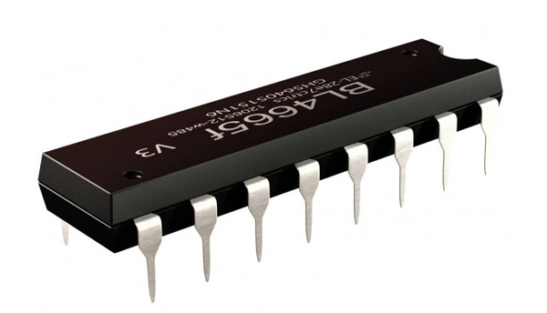
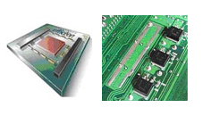

Такі комп'ютери, як ЕНІАК, ЕДСАК, ШЕОМ та ЮНІВАК, являли собою. лише перші моделі ЕОМ. Упродовж десятиріччя після створення ЮНІВАКа було виготовлено та введено в експлуатацію в США близько 5000 комп'ютерів.
Друге покоління комп'ютерів з'явилося на початку 60-х років, коли на зміну електронним лампам прийшли транзистори. Винайдені 1948 р. транзистори, як виявилось, були спроможні виконувати всі ті функції, які до цього часу виконували електронні лампи. Але при цьому вони були значно менші за розмірами та споживали набагато менше електроенергії. До того ж транзистори дешевші, випромінюють менше тепла та більш надійні, ніж електронні лампи. І все ж таки найдивовижнішою властивістю транзистора є те, що він один здатен виконувати функції 40 електронних ламп та ще й з більшою швидкістю, ніж вони. В результаті швидкодія машин другого покоління виросла приблизно в 10 разів порівняно з машинами першого покоління, обсяг їх пам'яті також збільшився. Водночас із процесом заміни електронних ламп транзисторами вдосконалювалися методи зберігання інформації. Магнітну стрічку, що вперше було використано в ЕОМ ЮНІВАК, почали використовувати як для введення, так і для виведення інформації. А в середині 60-х років набуло поширення зберігання інформації на дисках.
Поява інтегрованих схем започаткувала новий етап розвитку обчислювальної техніки — народження машин третього покоління. Інтегрована схема, яку також називають кристалом, являє собою мініатюрну електронну схему, витравлену на поверхні кремнієвого кристала площею приблизно 10 мм2. Перші інтегровані схеми (ІС) з'явилися 1964 року.
Поява інтегрованих схем означала справжню революцію в обчислювальній техніці. Одна така схема здатна замінити тисячі транзисторів, кожний 3 яких у свою чергу уже замінив 40 електронних ламп. Інакше кажучи, один крихітний, але складний кристал має такі ж самі обчислювальні можливості, як і 30-тонний ЕНІАК! Швидкодія ЕОМ третього покоління збільшилася приблизно в 100 разів порівняно з машинами другого покоління, а розміри набагато зменшилися.
Розвиток мікроелектроніки дав змогу розміщати на одному кристалі тисячі інтегрованих схем. Так, 1980 р. центральний процесор невеликої ЕОМ вдалося розташувати на кристалі площею 1,6 см2. Почалася епоха мікрокомп'ютерів. Швидкодія сучасної ЕОМ в десятки разів перевищує швидкодію ЕОМ третього покоління на інтегральних схемах, в 100 разів — швидкодію ЕОМ другого покоління на транзисторах та в 10 000 разів швидкодію ЕОМ першого покоління на електронних лампах.
Нині створюються та розвиваються ЕОМ п'ятого покоління — ЕОМ на надвеликих інтегрованих схемах. Ці ЕОМ використовують нові рішення у архітектурі комп'ютерної системи та принципи штучного інтелекту.
